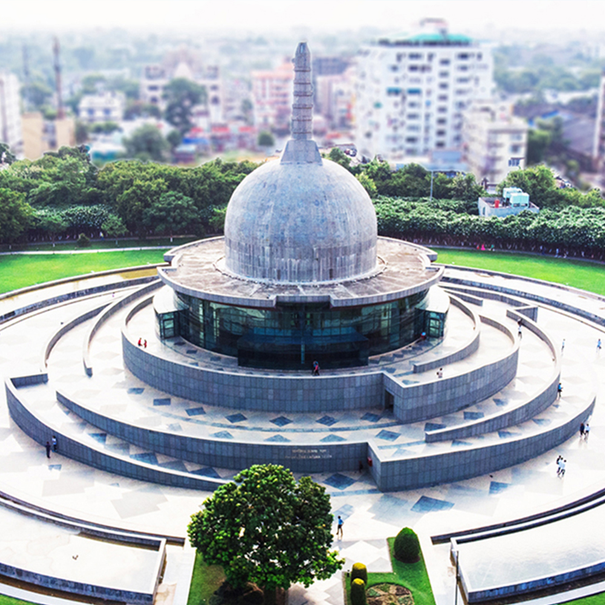
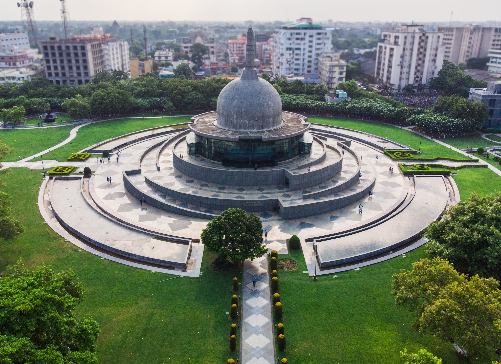
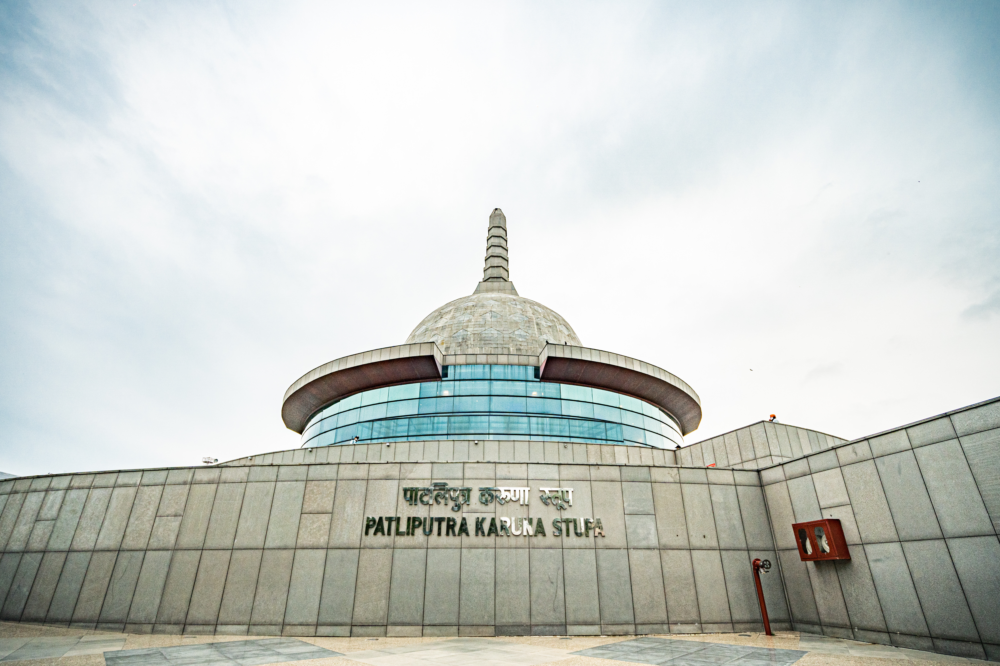
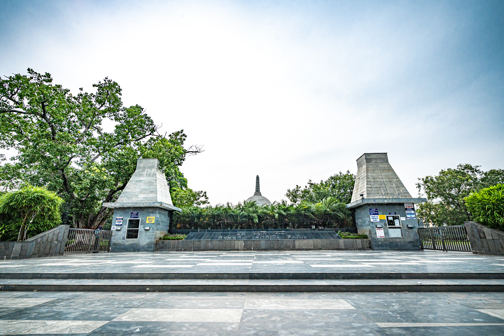

About Buddha Smriti Park
The Buddha Smriti Park in Patna is a multipurpose park with a number of facilities. It was developed by the Bihar Government to commemorate the 2550th anniversary of Buddha's enlightenment. The park serves as a center for meditation, cultural activities, and tourism.
Located near Guru Ka Bagh in Patna, the park features beautiful gardens, meditation spaces, and a museum displaying Buddhist artifacts. It's a perfect blend of modern architecture and spiritual tranquility.
Features and Facilities
The park includes a meditation hall, library, museum, and beautiful landscaped gardens. The Stupa built in the park contains holy relics brought from different countries. The park also has an open-air theater for cultural events and performances.
Cultural Significance
Buddha Smriti Park serves as a cultural hub promoting Buddhist philosophy and teachings. It hosts various events, meditation programs, and cultural festivals throughout the year. The park attracts both tourists and locals seeking peace and spiritual rejuvenation.




Visitor Information
The park is open throughout the year and offers various facilities for visitors. The best time to visit is during the winter months when the weather is pleasant. The park is easily accessible from different parts of Patna.
← Back to Destinations